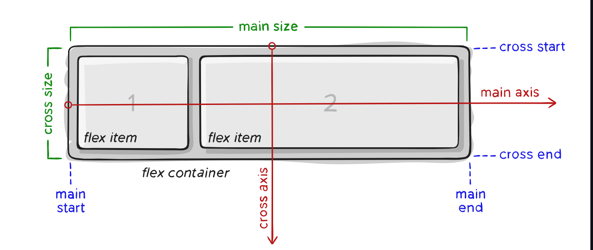

Responsive Design မှာ fluid grids, fluid images နဲ့ media queries တွေပါဝင်ပါတယ်။ Responsive design ကိုကျွန်တော်တို့ လေ့လာပြီးသားဖြစ်မှာပါ။ ဒါပေမယ့် origins နဲ့ foundational principles တွေကို နားလည်ထားချင်းက ပိုပြီး advanced ဖြစ်တဲ့ concepts ကိုရရှိနိုင်မှာဖြစ်ပါတယ်။ ဒါကြောင့် responsive design ထဲမှာရှိတဲ့ layouts တွေကို focus ထားပြီးတော့ လေ့လာသွားမှာဖြစ်ပါတယ်။ တစ်နည်းပြောရမယ်ဆိုရင် responsive design နောက်မှာ အလုပ်လုပ်တဲ့ basic theory ကိုလေ့လာသွားပါမယ်။ ပြီးတဲ့နောက်မှာ ကျွန်တော်တို့ ပိုပြီး specific ဖြစ်တဲ့ breakpoints နဲ့ design patterns တွေကဲ့သို့သော concepts တွေကိုဆက်ပြီးလေ့လာသွားပါမယ်။ ကျွန်တော်တို့ဟာ ဘယ် Rails app, PHP site, WordPress theme နဲ့ static website (ဒါမှမဟုတ်) ဘယ်လို webpage ရဲ့ type မဆို principles တွေအားလုံးဟာ အတူတူပါပဲ။
Responsive web design ဟာ multiple screen sizes တွေမှာ အလုပ်လုပ်တဲ့ building websites တွေအတွက် collection of techniques တွေပဲဖြစ်ပါတယ်။ Responsive web design တွေရဲ့ scope မှာ traditional screens (သို့) high DPI screens တွေကဲ့သို့ အမျိုးမျိုးသော pixel densities တွေမှာအလုပ်လုပ်တဲ့ websites တွေပါဝင်ပါတယ်။ May, 2010 မှာ Ethan Marcotte က seminal article titleနဲ့ blog ပေါ်မှာ list တစ်ခုနဲ့responsive web design ကိုစတင်ခဲ့ပါတယ်။ Web professionals တွေက သူတို့ရဲ့siteကို mobile versionအတွက်ကော desktop versionအတွက်ကော နှစ်မျိုးလုံးအတွက် create လုပ်ရပါတယ်။သူတို့ကသူတို့ siteကို တစ်ခုခုများမှားနေမလား။ phoneတွေအကုန်လုံးမှာကောအလုပ်လုပ်ရဲ့လားဆိုတာကိုလည်း maintainလုပ်ရပါတယ်။ လူတွေက javascriptကို browser ဘယ်သူတွေသုံးနေတယ် ၊ ဘယ်သူတွေကမသုံးဘူးဆိုတာကို detect လုပ်ဖို့သုံးပါတယ်။ Layoutတွေက pixel-based unitတွေနဲ့fixedဖြစ်အောင် controlled လုပ်ပါတယ်။ ပြီးတော့ ကျွန်တော်တို့ရဲ့ goal ကတော့ websiteတွေကို browserတိုင်းမှာ တူအောင်လုပ်ပေးတာဖြစ်ပါတယ်။ Digital screenတွေကတော့ pageတွေကို မတူအောင်ထွက်စေပါတယ်။ သူတို့မှာ sizeတွေ ၊ orientedတွေက ကွဲပြားနေတာပါပြီးတော့ pixel densitiesတွေလည်း အမျိုးမျိုးရှိနိုင်ပါတယ်။ ဒါကြောင့်layoutတွေကို fixed value ပေးမယ်ဆိုရင် rations or percentage တွေပေးသင့်ပါတယ်။
အခု ကျွန်တော်တို့ media queries ကို projects အချို့မှာ လက်တွေ့ကျကျသုံးဖူးမထားဘူးဆိုရင် responsive web design ကိုလေ့လာဖို့ ခက်ခဲပါလိမ့်မယ်။ အမှန်ဆိုရင် media queries တွေဟာ CSS rules တွေဖြစ်ပြီး သူတို့ဟာ media features ကဲ့သို့သော conditions အချို့တွေ့တဲ့အခါ CSS code တွေသာ condition ထဲမှာပါဝင်အောင် ကူညီပေးတာဖြစ်ပါတယ်။ ပြီးတော့ responsive web design တွေမှာ အသုံးအများဆုံးဖြစ်တဲ့ media features တွေကတော့ width, min or max-width တွေပဲဖြစ်ပါတယ်။ အချို့အရာတွေဟာ media queries တွေနဲ့ media features တွေပေါင်းထားတဲ့အတွက် width ဟာ သူတို့ထဲက တစ်ခုဖြစ်နိုင်တာကြောင့် နားလည်ဖို့ခက်ခဲပါတယ်။ ဒါကြောင့် media queries ထဲက media features အချို့ကို MDN မှာလေ့လာနိုင်ပါတယ်။ Orientation တွေကတော့ mobile devices တွေမှာ တစ်ကယ်ကိုအသုံးဝင်ပါတယ်။ ပြီးတော့ ဘယ် device ဟာ landscape (သို့) portrait mode မှာရှိနေသလဲဆိုတာ detect လုပ်နိုင်ပါတယ်။ width ကို detect လုပ်တာဟာ ကောင်းမွန်ပြီးတော့ user အနေနဲ့ landscape mode နဲ့ mobile device မှာ browser လုပ်မယ်ဆိုရင် layout အချို့ဟာ extra width ကိုမယူပေးပါဘူး။ Scrolling ကတော့ mobile layout တစ်ခုကို one column အနေနဲ့ reduced လုပ်ချင်တဲအခါမှာ သုံးပါတယ်။ ဒါပေမယ့် landscape mode ထဲမှာဆိုရင် scrolling တွေဟာ less ဖြစ်သွားမှာပါ။
Responsive web design မှာဆိုရင် ကျွန်တော်တို့အနေနဲ့ break point ကို လက်ရှိ current layout ကနေ breakလုပ်ချင်တဲ့အခါ width တစ်ခုနဲ့ သတ်မှတ်လို့ရပါတယ်။ တစ်ကယ်လို့ layout က break ဖြစ်သွားမယ်ဆိုရင် layout ကို adjust လုပ်ပေးနိုင်မယ့် media query တစ်ခုလိုအပ်ပါတယ်။ ဥပမာ mobile first approach တစ်ခုမှာဆိုရင် single column တစ်ခုနဲ့ layout စပြီးချရပါတယ်။ Media queries တိုင်းဟာ width ကိုအခြေခံပြီးတော့ layout ကို adjust လုပ်ပေးတာကို break point လို့ခေါ်ပါတယ်။ ကျွန်တော်တို့ ပြောင်းလဲသင့်တဲ့ layout တွေမှာ Breakpoints တွေက threshold တစ်ခုနဲ့သတ်မှတ်ပါတယ်။ ကျွန်တော်တို့ဟာ မတူညီတဲ့ popular devices တွေကို အခြေခံပြီးတော့ break points တွေပြုလုပ်နိုင်ပါတယ်။ ဥပမာ ကျွန်တော်တို့ mobile phone ရဲ့ size က 320px ရှိမယ်ဆိုတာသိရင် break point တစ်ခုဖန်တီးနိုင်ပါတယ်။ ဒါပေမယ့် ဒီလိုလုပ်တာဟာ bad practice ပဲဖြစ်ပါတယ်။ ကျွန်တော်တို့ဟာ device တိုင်းနဲ့ အဆင်ပြေစေဖို့အတွက် one column layout ကနေ multi-column layout အဖြစ် dramatic change လိုမျိုးပြုလုပ်ရပါမယ်။ ကျွန်တော်တို့အနေနဲ့ major breakpoints နဲ့ minor breakpoints ဆိုပြီးနှစ်မျိုးနဲ့ပြုလုပ်သင့်ပါတယ်။ Element တစ်ခုတည်းကိုမှ အနည်းငယ်ပဲ resize လုပ်ချင်တဲ့အခါဆိုရင် minor breakpoints တွေကိုပဲသုံးသင့်ပါတယ်။ Breakpoints တွေမှာ performance cost ရယ်လို့မရှိပါဘူး။ ဒါပေမယ့် breakpoint တစ်ခုချင်းစီမှာတော့ ကျွန်တော်တို့ design နဲ့ code တွေမှာ complexity အနည်းငယ်ရှိနိုင်ပါတယ်။ Breakpoints တွေကို ဖြစ်နိုင်သလောက် resolution မှာလုပ်ထားတာဟာ တစ်ကယ်ကို စိတ်ကျေနပ်စရာကောင်းမှာပါ။
Mobile Column တစ်ခုကနေdesktopမှာဆိုနှစ်ခုပြောင်းခြင်းက responsive layout တွေမှာအသုံးအများဆုံး feature တစ်ခုဖြစ်ပါတယ်။ အရေးကြီးတာကတော့ မတူညီတဲ့ design pattern တွေက breakpoint တစ်ခုကနေ အခြားတစ်ခုကို ဘယ်လို translate လုပ်တယ်ဆိုတာဖြစ်ပါတယ်။ For example-ကျွန်တော်တို့က full screen background or pagination or an image carousel ကိုလိုချင်လို့ရှိရင်design ရဲ့atomic pieceတွေကဘယ်လို scaled up or down လုပ်တယ်ဆိုတာသိဖို့လိုပါတယ်။ Websiteတွေမှာ အသုံးအများဆုံး design pattern တွေအများကြီးရှိပါတယ်။ ပီးတော့ variationတွေလည်းများစွာရှိပါတယ်။
ကျွန်တော်တို့ဟာ ဒီသင်ခန်းစာတွေမှာ ဘယ် responsive frameworks တွေကိုမှ မသုံးဘူးဆိုပေမယ့် ကျွန်တော်တို့ apply လုပ်လိုက်တဲ့ principles တွေကတော့ အတူတူပါပဲ။ အခုသုံးနေကြတဲ့ frameworks အများစုဟာ complex လည်းမဖြစ်ဘဲ responsive ဖြစ်အောင် calculations တွေလုပ်နိုင်ဖို့အတွက် floated elements တွေနဲ့ box sizing တွေကို သုံးကြပါတယ်။ သို့ပေမယ့်လည်း နောက်သုံးလာကြမယ့်အရာကတော့ responsive grid တွေဖြစ်တဲ့ Flexbox ပဲဖြစ်ပါတယ်။ 2015 လောက်မှာဆိုရင် flexbox တွေကို အချို့သော modern browsers တွေပဲ support လုပ်ပေးနိုင်ပါတယ်။ သူဟာ Internet Explorer 11 နဲ့ IE10 က older syntax တွေမှာအလုပ်လုပ်နိုင်ပြီးတော့ အဲ့ထက် older ဖြစ်တဲ့ versionတွေမှာတော့ အလုပ်လုပ်မပေးနိုင်ပါဘူး။ Flexbox ရဲ့ concept တွေကို CSS-Tricks မှာလေ့လာနိုင်ပါတယ်။ ကျွန်တော်တို့ရဲ့ CSS-Tricks မှာ basics and Terminology section ကိုဝင်လိုက်တဲ့အခါ အဲ့ဒီမှာ chart တစ်ခုနဲ့ HTML, CSS နဲ့ အခြား standards တွေကို W3C ကနေ ဖော်ပြပေးထားတာဖြစ်ပါတယ်။ ပထမဆုံးကြည့်ရမှာကတော့ flex container ပဲဖြစ်ပါတယ်။ flex container ကတော့ box တစ်ခုလုံးပဲဖြစ်ပါတယ်။ Flex container ကတော့ သူ့ထဲမှာရှိတဲ့ flex item လို့ခေါ်တဲ့ child element တစ်ခုချင်းစီကို ပြုလုပ်ပါတယ်။ Flexbox တွေဟာ ရရှိနိုင်တဲ့ available spaces တွေကို container flex နဲ့ပြုလုပ်ခြင်းဖြင့် responsive web design ဖြစ်အောင် ပြုလုပ်ပေးနိုင်ပါတယ်။ ကျွန်တော်တို့ရဲ့ ပုံမှာ main axis နဲ့ cross axis ရှိတာကို သတိထားမိမှာပါ။ Main axis ကတော့ horizontal line ပဲဖြစ်ပါတယ်။ နောက်တစ်ခုက display property ကို flex သုံးတာဟာ ကျွန်တော်တို့ရဲ့ children တွေအားလုံးကို flex container ထဲကိုရောက်စေပါတယ်။ နောက်တစ်ခုကတော့ ကျွန်တော်တို့ရဲ့ navigation တွေကို column အလိုက်ဖြစ်ချင်တယ်ဆိုရင်တော့ flex-direction ကို column ပေးရမှာဖြစ်ပြီး သူတို့ကို mobile phone တွေအတွက် အသုံးများပါတယ်။ ကျွန်တော်တို့ရဲ့ flex-direction ကို row လို့ပေးလိုက်မယ်ဆိုရင်တော့ child elements တွေအားလုံးဟာ row အဖြစ်ပြောင်းလဲသွားမှာဖြစ်ပါတယ်။ Flex property ကတော့ parent တွေကို flex container ထဲမှာရှိတဲ့ ဘယ်ဘက် columnမှာ လာပေါ်စေမှာဖြစ်ပါတယ်။ Flex မှာ value သုံးခုရှိပြီးတော့ ပထမတစ်ခုက required ဖြစ်ပြီး၊ ဒုတိယနဲ့ တတိယ value ကတော့ optional ပဲဖြစ်ပါတယ်။ ကျွန်တော်တို့ navigation မှာ item နှစ်ခုရှိပြီး သူတို့ကို space သတ်မှတ်ပေးချင်တယ်ဆိုရင် flex-grow property ကိုအသုံးပြုပေးရပါတယ်။ content တွေရဲ့ ကြားက space ကို ခြားချင်တယ်ဆိုရင် justify-content ဆိုတဲ့ property ကိုအသုံးပြုနိုင်ပါတယ်။
For Example:
